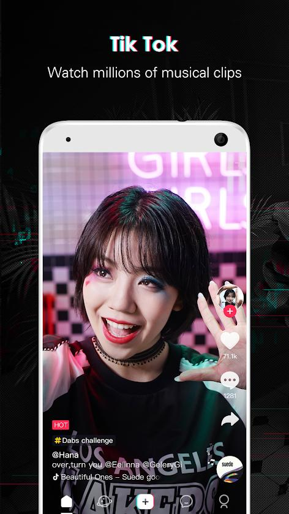
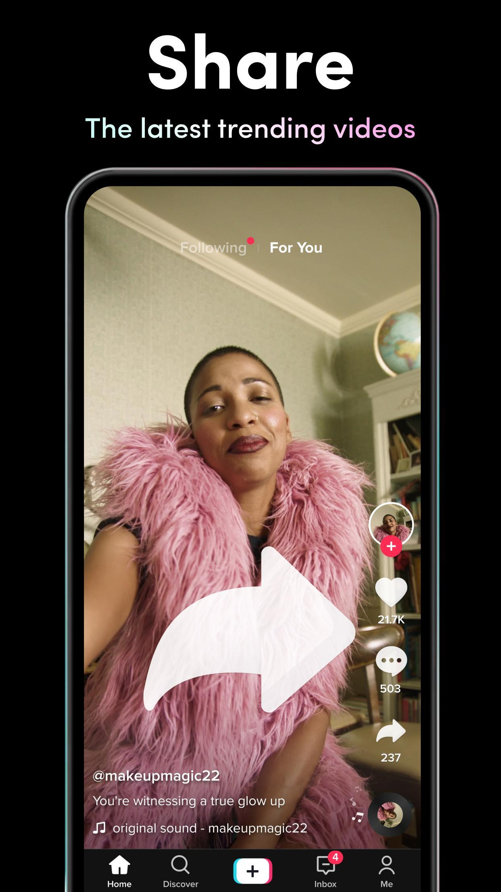

TikTok is the faster growing social media application that allows users to create and share videos on any topic. TikTok has a live streaming feature where you can earn money by getting donations in the form of TikTok’s currency or coins from your views. But this feature is only available to users who have at least 1,000 followers in the application. Live streaming on TikTok does not only give you the ability to earn but also to connect directly with your followers real time. One cannot necessarily wait for the newscasters to go live in today's dynamic and technology-driven environment. As a result, social media apps like TikTok have gained in popularity in recent years.

Creators on TikTok go LIVE to share off their talents or just interact with their followers. But compared to other social media platforms where live streaming can be accessed easily, TikTok has its own requirements for you to do so. And here are the guidelines that you need to follow before you’ll be able to broadcast live in the application:
A TikTok user must first gain at least 1,000 followers to have an access to the live stream option in the application. When you have finally reached the required number of followers, it might still take several days before you’ll be able to see the live button on it.
TikTok does not initially allow users that are below 13 years old to create an account in the application and in terms of the live streaming feature, only users that are at least 16 years can go live and can only access the comments and hearts feature because only the users that are 18 years old and above can earn the gift points which can be converted into an actual money.
You should take note that actively soliciting gifts or offering incentives for gifting is not allowed as it violates the Community Guidelines of TikTok
Once you have reached these criterias, you can now broadcast live on TikTok. To do that, you need to
open your TikTok app, touch the “+” button at the bottom center of the screen, press the Live under the
record button, create a title that would describe your live stream and then finally, you can now click
the “Go Live” to begin.
When to stream your LIVE video is an important consideration. The best
time to stream is during primetime, but keep in mind your target
audience. Consider rescheduling your live stream to correspond with
their peak activity hours.
It is also important to consider the duration of your live stream. It is entirely
up to you how long you want to run your stream, but 30 minutes would
be enough and a good practice to consider.
Posting a video before your live stream is a smart idea. If your viewer
sees your video during your live, a special icon will appear that will allow
them to directly access your stream through your “For you” feed.
When it comes to keeping audiences interested, good lighting is essential.
Poor lighting makes it difficult for viewers to see what is going on which can
distract the quality of your livestream. Good lighting makes your audience concentrate on you. That is why you have to make sure that you have good lighting before you start recording.
When it comes to making great live videos, sound is sometimes ignored, but it is just as relevant as your visuals. After all, you want your audience to hear what you say. Since background noise can be annoying, consider streaming from a quiet place.
Before going live, it's a good idea to test your internet connection. Since live videos necessarily require a stable internet connection, it's best to find the most efficient one.
You should also think about your visual aspect for a moment. Make a decision on a single camera angle because moving your phone around during your stream will cause your audience a poor viewing experience, that is why it is recommended to pick a spot and stick with it.
Your best ally is preparation. Before you go live, consider what you want to do. There's no need to write a script, but getting an idea of what your stream will be about will help you stay focused.
Consider interacting with your audience if you decide to go live. Think about going live as a way to strengthen your interaction with your audience, whether you're responding to feedback or answering their questions.
For live streaming, TikTok has implemented a variety of protections. Creators can filter comments, mute viewers' ability to comment, and even block anyone from viewing your stream

2021 * 2-minute read
With the press of a button, you can stream your actions live to others around the globe; and whether you want to show your dance moves, cooking skills, or share your thoughts, there are people eager to watch.
Read More2020 * 5-minute read
If you’re a fluent English speaker looking to make extra income or get teaching experience, becoming an online ESL teacher could be the perfect gig for you!
Read More
2021 * 5-minute read
Going LIVE gives creators the opportunity to connect directly with their audience in real time. Let’s uncover how going LIVE works and what you can do to have a great experience with it.
Read MoreVideo Courtesy: TikTok
https://youtu.be/iFgxhPhJfME
We create this content for general information purposes and all the information is base on our understanding and researches and it should not taken as advice. Always take professional advice.
Disclaimer: Note that we do not own the images and videos used in this website. All rights and credit goes directly to its rightful owners. This website is non-profit and made for educational purposes only. No copyright infringement intended.
"Copyright Disclaimer, Under Section 107 of the Copyright Act 1976, allowance is made for "fair use" for purposes such as criticism, comment, news reporting, teaching, scholarship, and research. Fair use is a use permitted by copyright statute that might
otherwise be infringing. Non-profit, educational or personal use tips the balance in favor of fair use"